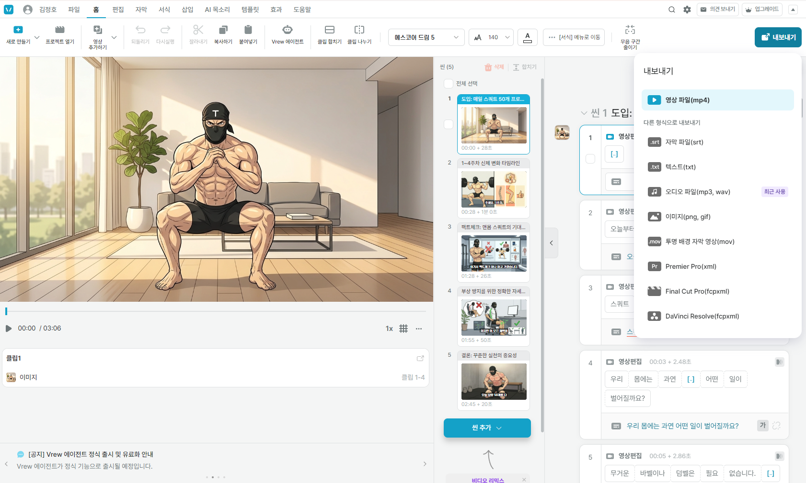
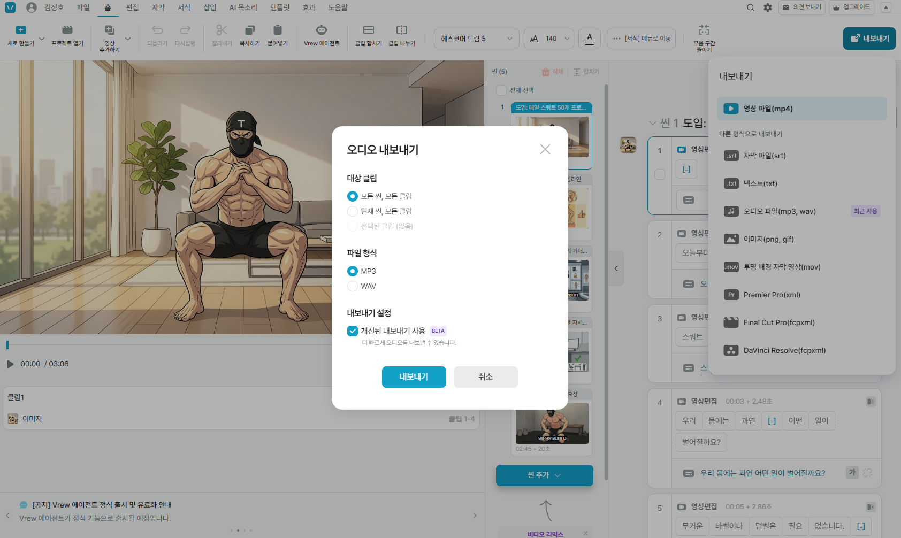
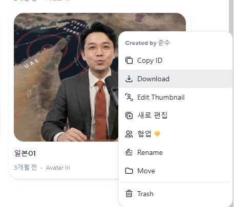
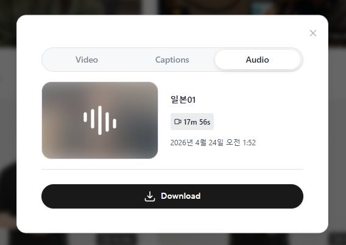
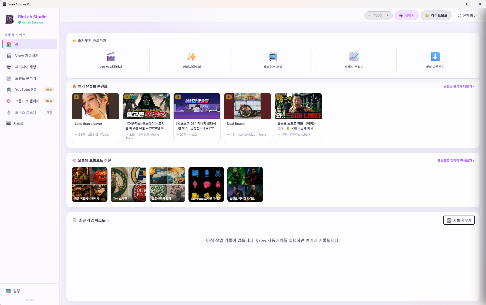
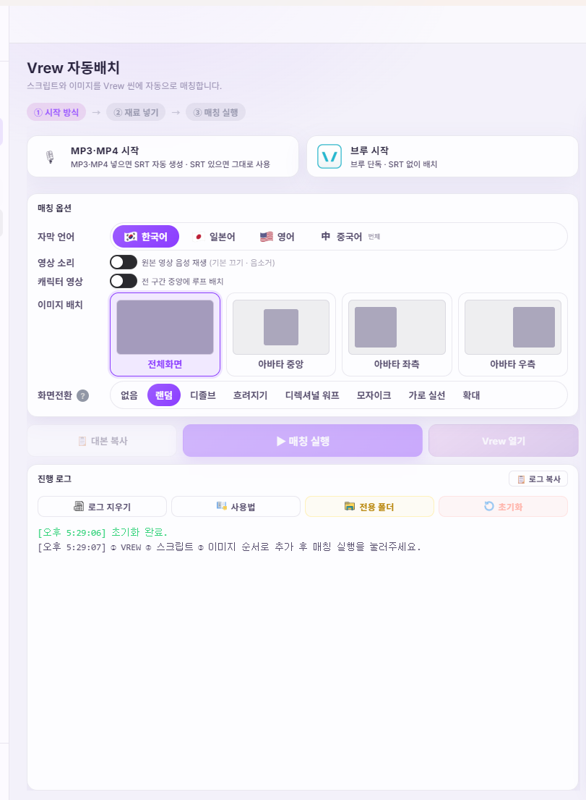
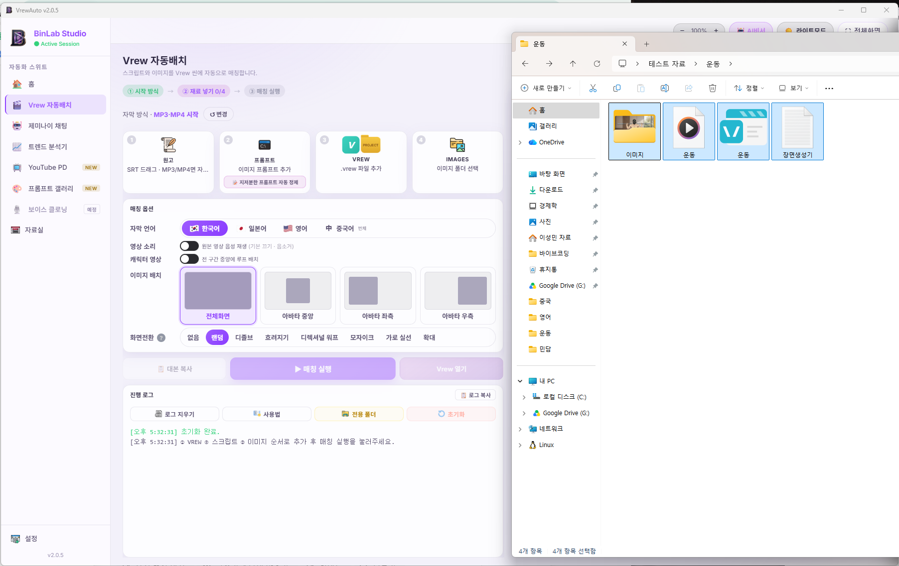
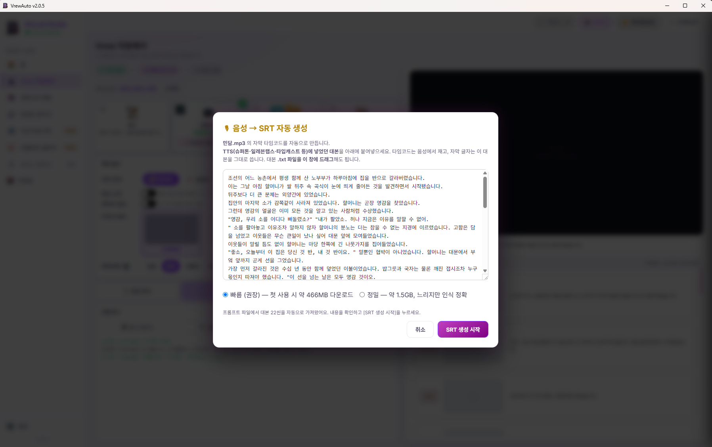

🆕 이번 버전에서 새로워진 점
슈퍼톤·일레븐랩스 같은 TTS로 음성을 만드는 분들이, 그동안 헤이젠 SRT가 없어 불편했던 점을 해결했어요.
- 슈퍼톤·일레븐랩스 등 TTS 음성(MP3/MP4)을 넣으면 SRT 자막 파일을 자동 생성합니다 (진행률·남은시간 표시)
- 생성한 SRT의 저장 위치를 직접 선택할 수 있어요 (기본값 = 다운로드 폴더)
- 음성에 같은 내용이 반복되면 매칭 전에 미리 알려드려요
🤔 왜 이 기능을 만들었나요?
헤이젠(HeyGen) SRT는 실제 영상 음성과 시각이 미세하게 어긋나는 경우가 있어요 — 자막이 밀려서 이미지가 엉뚱한 곳에 배치됩니다.
브루(Vrew)는 내가 쓴 대본 글자와 브루가 받아쓴 글자가 달라지면 이미지 매칭에서 오류가 날 수 있어요.
그래서 실제 음성(MP3)에서 정확한 타임코드로 SRT를 새로 만들어 이 두 문제를 한 번에 해결합니다.
📥 STEP 0. 먼저 음성 파일(MP3)을 준비하세요
본인 방식에 맞는 것만 따라 하세요 — 브루로 만들었으면 🅰️, 헤이젠으로 만들었으면 🅱️.
🅰️ 브루(Vrew)에서 MP3 내보내기
A-1
내보내기 → "오디오 파일(mp3, wav)"
브루 오른쪽 위 "내보내기"를 누르고, 목록에서 "오디오 파일(mp3, wav)"을 고르세요.

👆 오디오 파일(mp3, wav)
🔍 클릭하면 크게
▲ 내보내기 → "오디오 파일(mp3, wav)"
A-2
MP3 선택 → "내보내기"
대상은 "모든 씬, 모든 클립", 형식은 MP3로 두고 "내보내기"를 누르면 음성 파일이 저장됩니다.

👆 여기 클릭
🔍 클릭하면 크게
▲ MP3 선택 후 "내보내기"
🅱️ 헤이젠(HeyGen)에서 MP3 내려받기
B-1
영상 ⋯ 메뉴 → "Download"
헤이젠에서 영상에 마우스를 올려 ⋯ (점 세 개) 또는 우클릭 메뉴를 열고 "Download"를 누르세요.

👆 Download
🔍 클릭하면 크게
▲ 영상 메뉴 → "Download"
B-2
"Audio" 탭 → "Download"
창이 뜨면 위쪽에서 "Audio" 탭을 고르고, 아래 "Download" 버튼을 누르면 음성(MP3)이 저장됩니다.

① Audio
② Download
🔍 클릭하면 크게
▲ ① "Audio" 탭 선택 → ② "Download"
🎬 STEP 1~6. 음성으로 SRT 만들고 배치하기
1
홈에서 "Vrew 자동배치" 열기
프로그램을 켜고 왼쪽 메뉴에서 Vrew 자동배치를 누르세요.

👈 여기 클릭
🔍 클릭하면 크게
▲ 왼쪽 메뉴 "Vrew 자동배치"
2
시작 방식 → "MP3·MP4 시작" 선택
"MP3·MP4 시작"을 고르세요. 준비한 음성 파일을 넣으면 SRT가 자동 생성됩니다. (이미 SRT가 있으면 그대로 사용돼요)

👆 이걸 선택
🔍 클릭하면 크게
▲ "MP3·MP4 시작" 선택 · 매칭 옵션(자막 언어·이미지 배치·화면전환)은 취향대로
3
재료 넣기 (원고 · 음성 · VREW · 이미지)
4칸에 파일을 순서대로 넣어주세요. ① 원고, ② 이미지 프롬프트, ③ .vrew 프로젝트, ④ 이미지 폴더입니다. 방금 준비한 음성 파일(MP3/MP4)은 원고 칸에 넣으면 돼요. 파일을 창에 드래그해도 됩니다.

👆 여기에 파일 넣기
🔍 클릭하면 크게
▲ ① 원고 · ② 프롬프트 · ③ VREW · ④ 이미지 폴더 (드래그해서 넣어도 됨)
4
음성 → SRT 자동 생성 → "SRT 생성 시작"
음성 파일을 넣으면 "음성 → SRT 자동 생성" 창이 뜹니다. 대본은 프롬프트에서 자동으로 채워지니 내용만 확인하고 "SRT 생성 시작"을 누르세요.

👇 여기 클릭
🔍 클릭하면 크게
▲ 대본 확인 후 오른쪽 아래 "SRT 생성 시작"
✅ 빠름 vs 정밀, 뭘 고를까요?
빠름(권장) — 첫 사용 시 약 466MB 한 번만 다운로드, 대부분 이걸로 충분합니다. 정밀 — 약 1.5GB, 느리지만 인식이 더 정확해요.
5
진행률 보며 잠시 기다리기 (모델 → 추출 → 인식 → 정렬)
음성을 인식해 SRT 시각을 맞추는 동안 진행률과 남은 시간이 표시됩니다. 4단계(모델·추출·인식·정렬)를 거쳐요.
▲ 음성 인식 중… 진행률·경과·남은시간이 표시됩니다
💚 안심하세요
중간에 멈춘 것처럼 보여도 PC가 꺼지거나 데이터가 손실되지 않습니다. 5분 분량이면 대략 몇 분 안에 끝나요.
6
SRT 완성 → "매칭 실행" → "Vrew 열기"
SRT가 만들어지면 다운로드 폴더에 .srt로 저장되고(재사용 가능), 이어서 "매칭 실행"을 누르면 이미지가 씬에 자동 배치됩니다. 끝나면 "Vrew 열기"로 결과를 확인하세요.
❓ 자주 묻는 질문
헤이젠 SRT 파일이 원래 있어요. 꼭 음성으로 만들어야 하나요?
헤이젠 SRT가 음성과 잘 맞으면 그대로 쓰셔도 됩니다. 다만 헤이젠 SRT는 실제 음성과 시각이 어긋날 때가 있어서, 음성(MP3)에서 직접 뽑으면 더 정확해요. SRT가 이미 있으면 자동 생성은 건너뜁니다.
슈퍼톤·일레븐랩스로 만든 음성만 있고 SRT가 없어요.
바로 이 기능을 위한 경우예요! "MP3·MP4 시작"에 음성만 넣으면 SRT를 자동으로 만들어줍니다.
"빠름"은 466MB를 매번 받나요?
아니요. 첫 사용 때 한 번만 받고, 그 다음부터는 다시 받지 않습니다. (이어받기도 지원해요)
만든 SRT가 어디에 저장되나요?
기본값은 다운로드 폴더입니다. 저장 위치를 직접 고를 수도 있어요. 한 번 만든 SRT는 음성 파일 옆에 남아 다음에 재사용됩니다.
업데이트가 안 떠요.
프로그램을 껐다 켜주세요. 그래도 안 뜨면 1~2분 뒤 다시 켜보세요. 설치 방법은
설치 가이드를 참고하세요.